# Installing necessary packages
if (!requireNamespace("tidyverse", quietly = TRUE)) {
install.packages("tidyverse")
}
if (!requireNamespace("gggenes", quietly = TRUE)) {
install.packages("gggenes")
}
if (!requireNamespace("ggtree", quietly = TRUE)) {
install.packages("ggtree")
}
# Load packages
library(tidyverse)
library(gggenes)
library(ggtree)Gene Structure Plot
In biology, especially in molecular biology research, analyzing the expression and regulation patterns of genes has always been a research focus. In this process, it is inevitable that there will be a need to draw the structure of a gene or the upstream and downstream relationships. Therefore, this tutorial will summarize some common gene structure drawing methods based on the R package gggenes.
Example
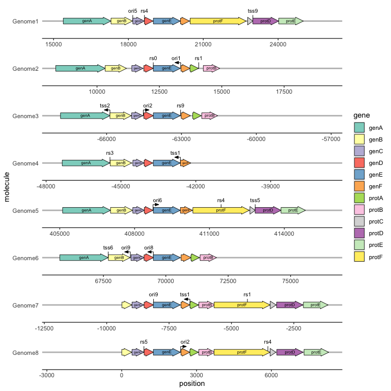
Setup
System Requirements: Cross-platform (Linux/MacOS/Windows)
Programming language: R
Dependent packages:
tidyverse;gggenes;ggtree
Data Preparation
The data uses the example_genes dataset, example_subgenes dataset, and example_features dataset that come with gggenes, which record the location information of genes, the location information of gene substructures, and the location information of marker points on genes, respectively.
example_genes is a data frame, which contains a column recording chromosome or chain information as the vertical coordinate, a column recording gene or sequence ID as the mapping index of the dye, two columns recording the start and end positions of the gene, and a column recording the gene direction. Each row is a gene. The following table is an example of the data of example_genes:
head(example_genes) molecule gene start end strand orientation
1 Genome1 genA 15389 17299 reverse 1
2 Genome1 genB 17301 18161 forward 0
3 Genome1 genC 18176 18640 reverse 1
4 Genome1 genD 18641 18985 forward 0
5 Genome1 genE 18999 20078 reverse 1
6 Genome1 genF 20086 20451 forward 1example_subgenes needs to contain all the columns of example_genes, and needs to contain an additional column to record the gene substructure ID, two columns to record the start and end positions of the gene substructure, and each row is a gene substructure. The following table is an example of the data of example_subgenes:
head(example_subgenes) molecule gene start end strand subgene from to orientation
1 Genome5 genA 405113 407035 forward genA-1 405774 406538 0
2 Genome5 genB 407035 407916 forward genB-1 407458 407897 0
3 Genome5 genC 407927 408394 forward genC-1 407942 408158 0
4 Genome5 genC 407927 408394 forward genC-2 408186 408209 0
5 Genome5 genC 407927 408394 forward genC-3 408233 408257 0
6 Genome5 genF 409836 410315 forward genF-1 409938 410016 0example_features needs to contain a column for recording chromosome or chain information, a column for recording marker name, a column for recording marker type, a column for recording marker position, and a column for recording marker direction. Each line is a marker. The following table is an example of example_features data:
head(example_features) molecule name type position forward
1 Genome1 tss9 tss 22988 NA
2 Genome1 rs4 restriction site 18641 NA
3 Genome1 ori5 ori 18174 NA
4 Genome2 rs0 restriction site 12256 NA
5 Genome2 rs1 restriction site 14076 NA
6 Genome2 ori1 ori 13355 FALSEVisualization
1. Gene structure plot basics
As an extension of ggplot2, gggenes consists of a main function geom_gene_arrow and several secondary functions. First, the basic usage of gggenes is introduced:
1.1 Plotting the relative positions of a series of genes
# Plotting the relative positions of a series of genes
ggplot(example_genes, aes(xmin = start, xmax = end, y = molecule)) +
geom_gene_arrow() +
facet_wrap(~ molecule, scales = "free", ncol = 1) # gggenes is usually used with the facet_wrap function for faceting. It should be noted that if the drawing interface is too small, an error message will be displayed: "Viewport has zero dimension(s)". Just enlarge the drawing window or set a larger interface.
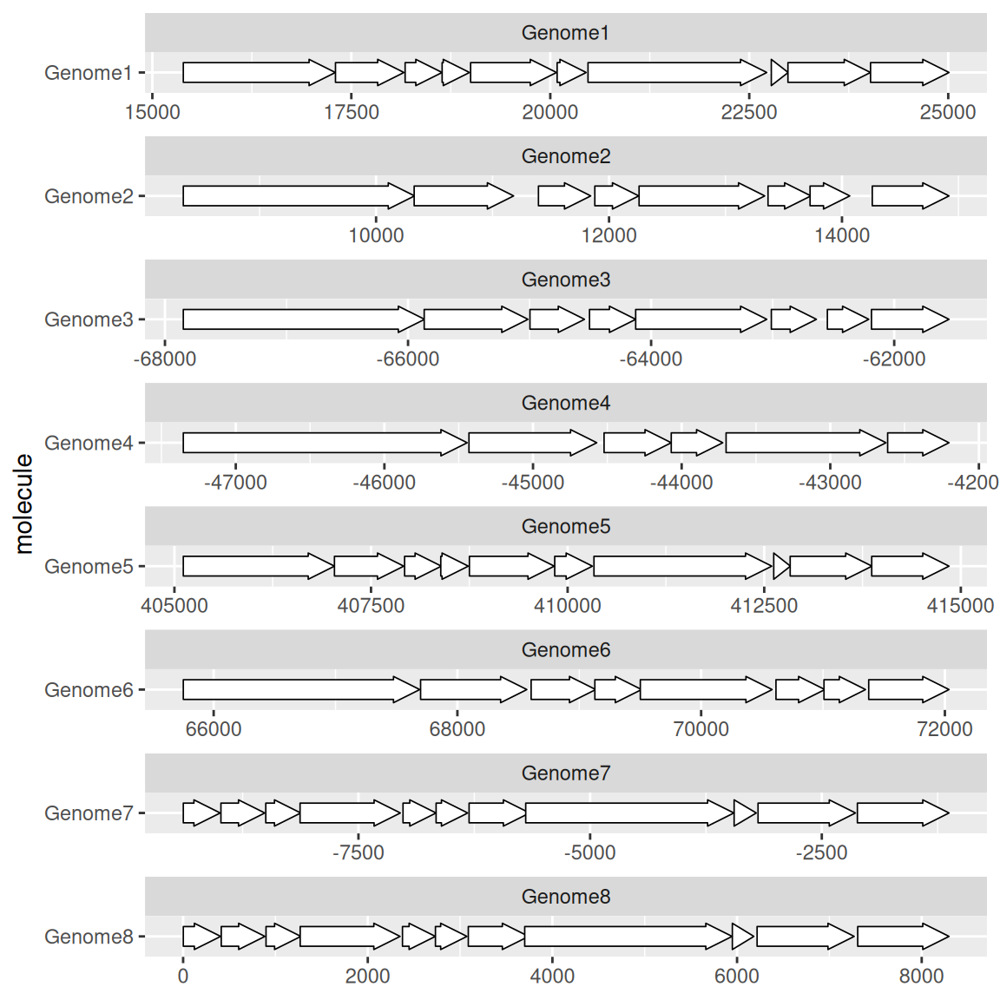
1.2 Plot a set of genes
If you are interested in the structure of the gene itself rather than its location, you can use the gene ID as the vertical axis:
# Plot a set of genes
df <- subset(example_genes, molecule == "Genome4")
df$end <- df$end-df$start
df$start <- 1
ggplot(df, aes(xmin = start, xmax = end, y = gene)) +
geom_gene_arrow()
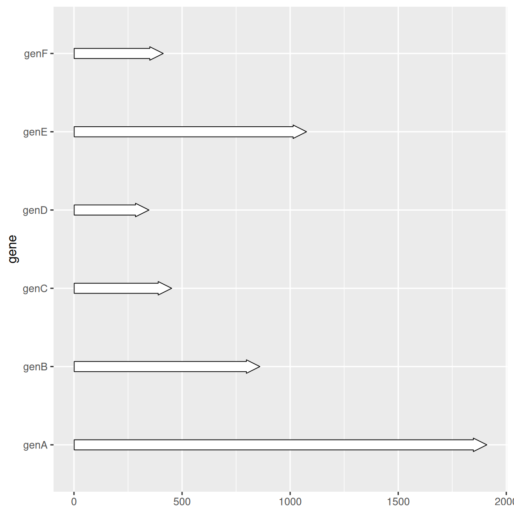
1.3 Plot gene substructure
Sometimes we may focus on more detailed structures of genes, such as CDS positions or special motif positions, etc. In this case, we need another extended function geom_subgene_arrow provided by gggenes to complete it. It should be noted that although example_subgenes can also be used as the input of geom_gene_arrow, since each row in the data will create an outline image of a gene, it is not recommended to do so when a gene contains multiple substructures. The recommended method is to separate the gene information and substructure information into two data frames. The usage is as follows:
# Plot gene substructure
ggplot(example_genes, aes(xmin = start, xmax = end, y = molecule)) +
facet_wrap(~ molecule, scales = "free", ncol = 1) +
geom_gene_arrow(fill = "white") +
geom_subgene_arrow(data = example_subgenes,
aes(fill = gene, xsubmin = from, xsubmax = to),
color="black", alpha=.7)
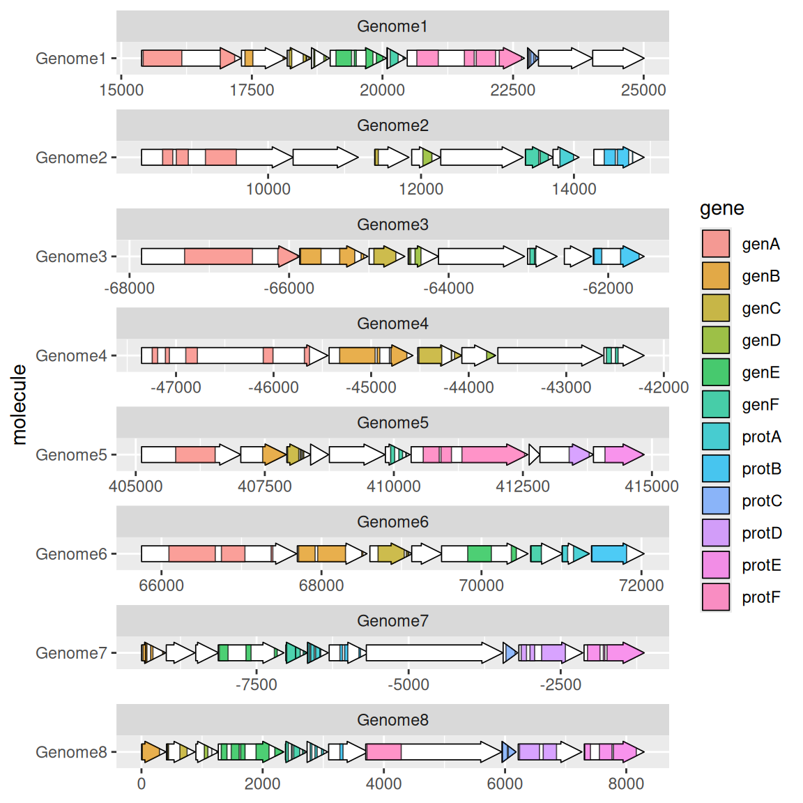
1.4 Plot gene markers
Sometimes we may focus on a particular point on a gene or sequence, such as a restriction site or a promoter site. Unlike genes or their substructures, markers are often one or a limited number of bases. In this case, it is not suitable to use the arrow drawing method. The geom_feature and geom_feature_label extension functions can complete this labeling task well:
# Plot gene markers
ggplot(example_genes, aes(xmin = start, xmax = end, y = molecule)) +
facet_wrap(~ molecule, scales = "free", ncol = 1) +
geom_gene_arrow(fill = "white")+
geom_feature(
data = example_features,
aes(x = position, y = molecule, forward = forward)
) +
geom_feature_label(
data = example_features,
aes(x = position, y = molecule, label = name, forward = forward),
feature_height = unit(4, "mm"), # When the marker point cannot be displayed normally, you can set this parameter to adjust the marker label height.
label_height = unit(3, "mm") # When the size of the marker label is not appropriate, you can set this parameter to adjust the size of the marker label.
) +
theme_genes() # This topic will be mentioned below
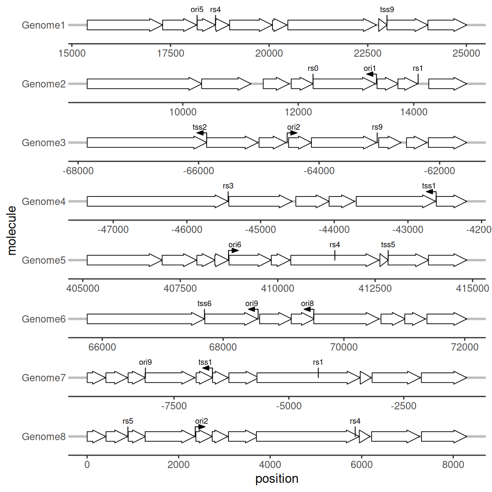
1.5 With evolutionary trees and plots
We may be interested in the genetic differences between different species or varieties in a certain chromosome region. At this time, we can combine the evolutionary tree with the gene structure diagram. In addition to using the puzzle method, the R package ggtree also provides an interface for combining the two: First, we need to obtain a tree structure. Here, we directly use the gggenes data set to construct a tree. When actually using it, just read a tree file. Generate an evolutionary tree based on the gene structure. It is not necessary to generate it for actual use:
get_genes <- function(data, genome) {
filter(data, molecule == genome) %>% pull(gene)
}
g <- unique(example_genes[,1])
n <- length(g)
d <- matrix(nrow = n, ncol = n)
rownames(d) <- colnames(d) <- g
genes <- lapply(g, get_genes, data = example_genes)
for (i in 1:n) {
for (j in 1:i) {
jaccard_sim <- length(intersect(genes[[i]], genes[[j]])) /
length(union(genes[[i]], genes[[j]]))
d[j, i] <- d[i, j] <- 1 - jaccard_sim
}
}
tree <- ape::bionj(d) When drawing, use the ggtree function, specify the gene structure data in geom_facet, and specify geom = geom_motif panel = 'Alignment'. The on parameter is used to specify the gene name to be aligned (it must be common to all species. If not, I don’t know how to set it for the time being). The coordinate mapping parameters are xmin and xmax. It should be noted that the chromosome ID used as the vertical axis above (here can be the name of different species) must be in the first column of the data frame. ggtree will determine the vertical axis position of the gene structure by comparing the branch labels of the tree and the first column of the gene structure. The drawing code is as follows:
# With evolutionary trees and plots
ggtree(tree, branch.length='none') +
geom_tiplab() + xlim_tree(5.5) +
geom_facet(data = example_genes,
geom = geom_motif,
mapping = aes(xmin = start, xmax = end, fill = gene),
panel = 'Alignment',on = 'genE',
label = 'gene', align = 'left') +
scale_fill_brewer(palette = "Set3") + #修改配色的方法下面会提到
scale_x_continuous(expand=c(0,0)) +
theme(strip.text=element_blank())
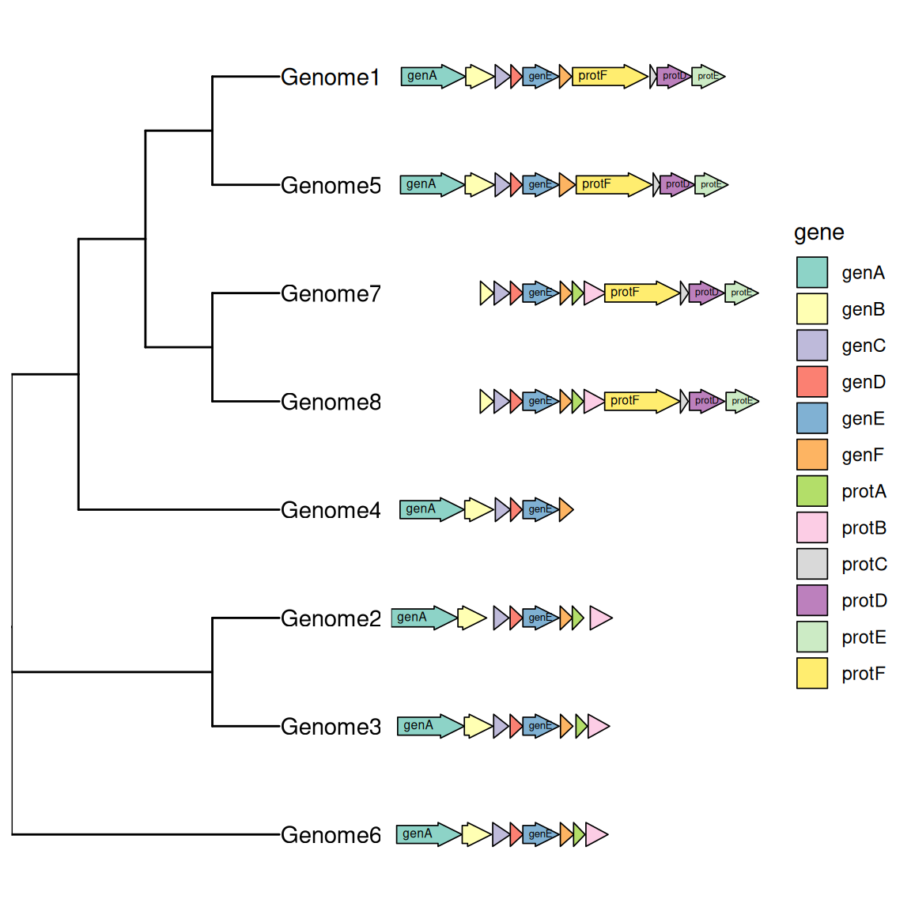
2. Beautification
2.1 theme_genes
In gggenes, there is an image theme called theme_genes that is very suitable for drawing gene structure:
# theme_genes
ggplot(example_genes, aes(xmin = start, xmax = end, y = molecule)) +
geom_gene_arrow() +
facet_wrap(~ molecule, scales = "free", ncol = 1) +
theme_genes()
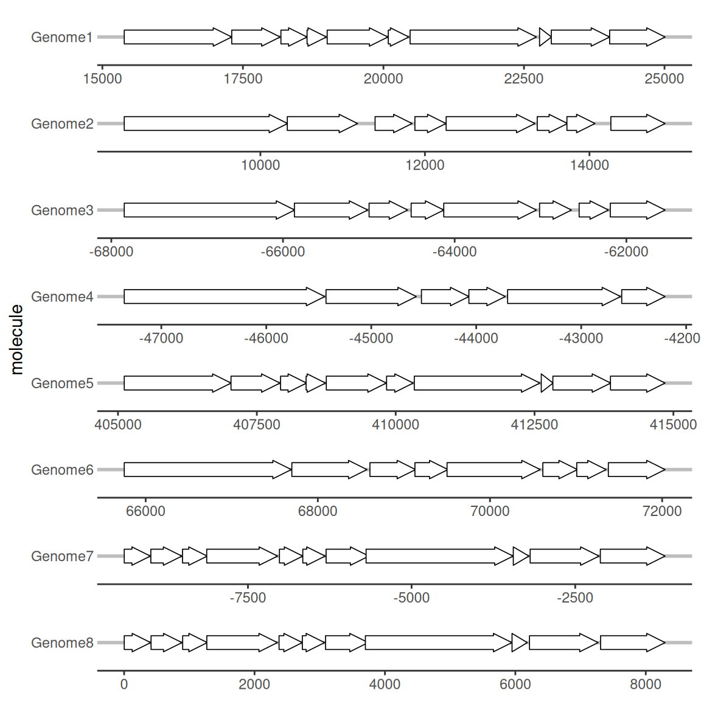
2.2 Modify Color
Add colors to different genes (the same goes for substructures, so I won’t go into details):
# Modify Color
ggplot(example_genes, aes(xmin = start, xmax = end, y = molecule, fill=gene)) +
geom_gene_arrow() +
facet_wrap(~ molecule, scales = "free", ncol = 1) +
theme_genes()
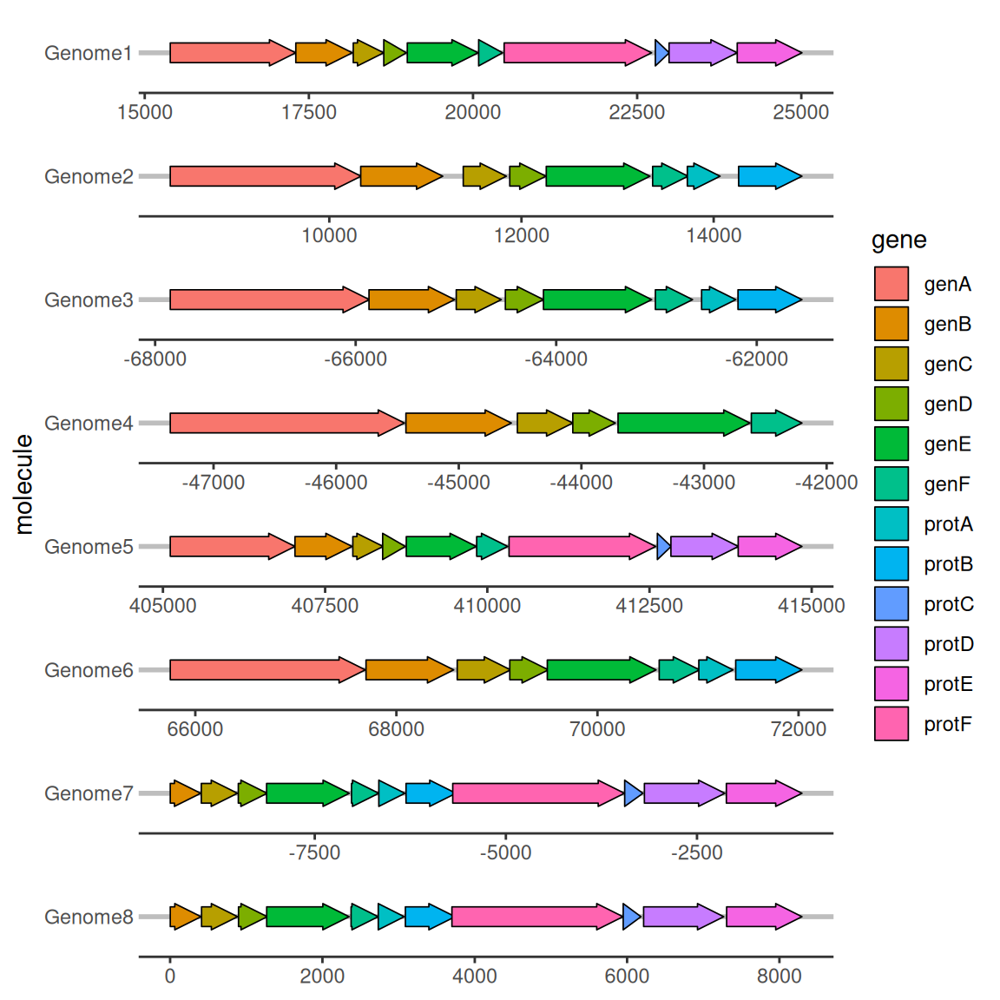
To change the color scheme, you can use the palette or set it manually:
# Modify Color
ggplot(example_genes, aes(xmin = start, xmax = end, y = molecule, fill = gene)) +
geom_gene_arrow() +
facet_wrap(~ molecule, scales = "free", ncol = 1) +
scale_fill_brewer(palette = "Set3") +
theme_genes()
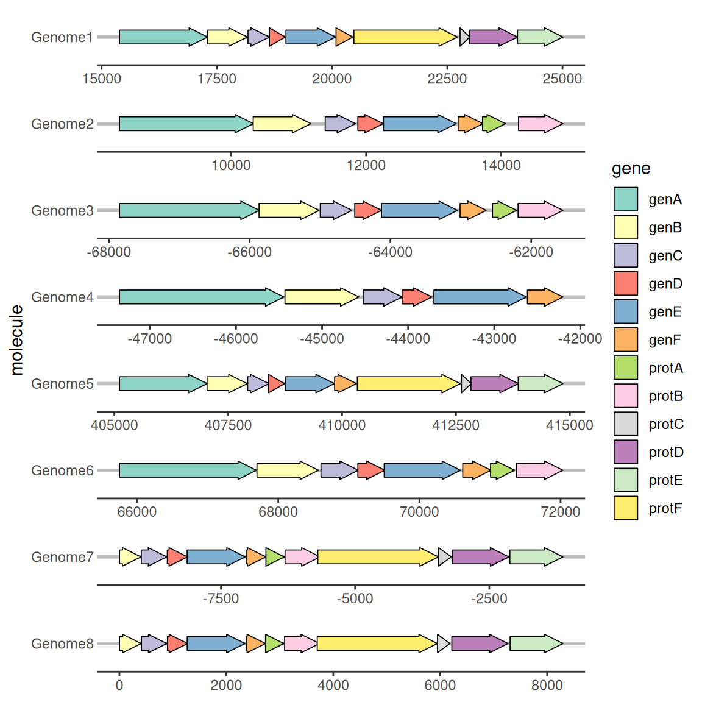
Custom color scheme:
# Modify Color
ggplot(example_genes, aes(xmin = start, xmax = end, y = molecule, fill = gene)) +
geom_gene_arrow() +
facet_wrap(~ molecule, scales = "free", ncol = 1) +
scale_fill_manual(values=c("genA"="#266CAF",
"genB"="#BF3237",
"genC"="#54AC78",
"genD"="#FBD75F")) +
theme_genes()
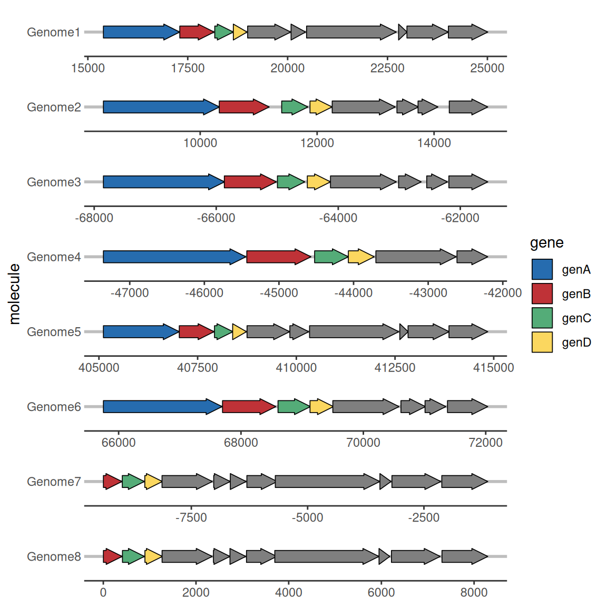
2.3 Add gene labels
To add gene labels, you need to use the geom_gene_label extension function, which only requires an additional label mapping to be defined.
# Add gene labels
ggplot(example_genes, aes(xmin = start, xmax = end, y = molecule, fill = gene)) +
geom_gene_arrow() +
geom_gene_label(aes(label = gene),align = "left") +
facet_wrap(~ molecule, scales = "free", ncol = 1) +
scale_fill_brewer(palette = "Set3") +
theme_genes()
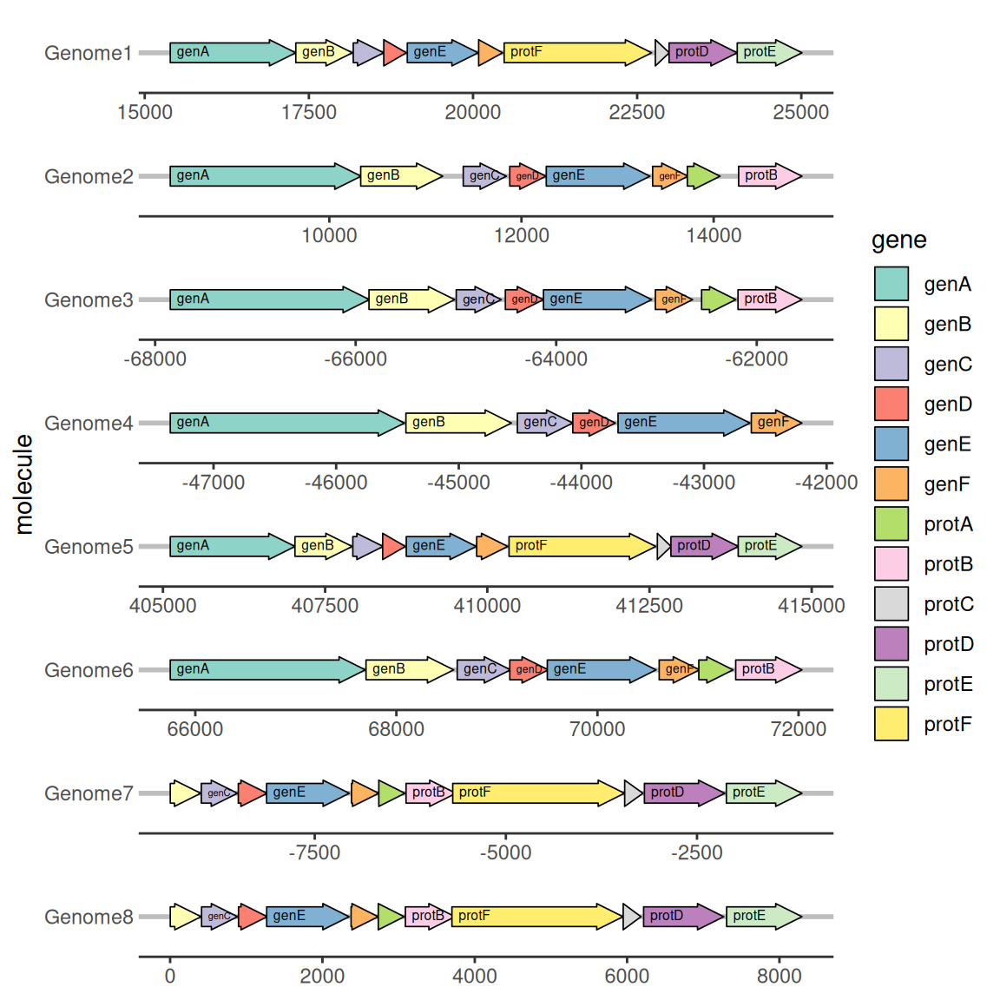
2.4 Modify gene arrow shape
To modify the arrowhead properties, you need to use two parameters in geom_gene_arrow: arrowhead_height and arrowhead_width, which define the height and width of the arrowhead respectively.
# Modify gene arrow shape
ggplot(example_genes, aes(xmin = start, xmax = end, y = molecule, fill = gene)) +
geom_gene_arrow(arrowhead_height = unit(3, "mm"), arrowhead_width = unit(1, "mm")) +
facet_wrap(~ molecule, scales = "free", ncol = 1) +
scale_fill_brewer(palette = "Set3") +
theme_genes()
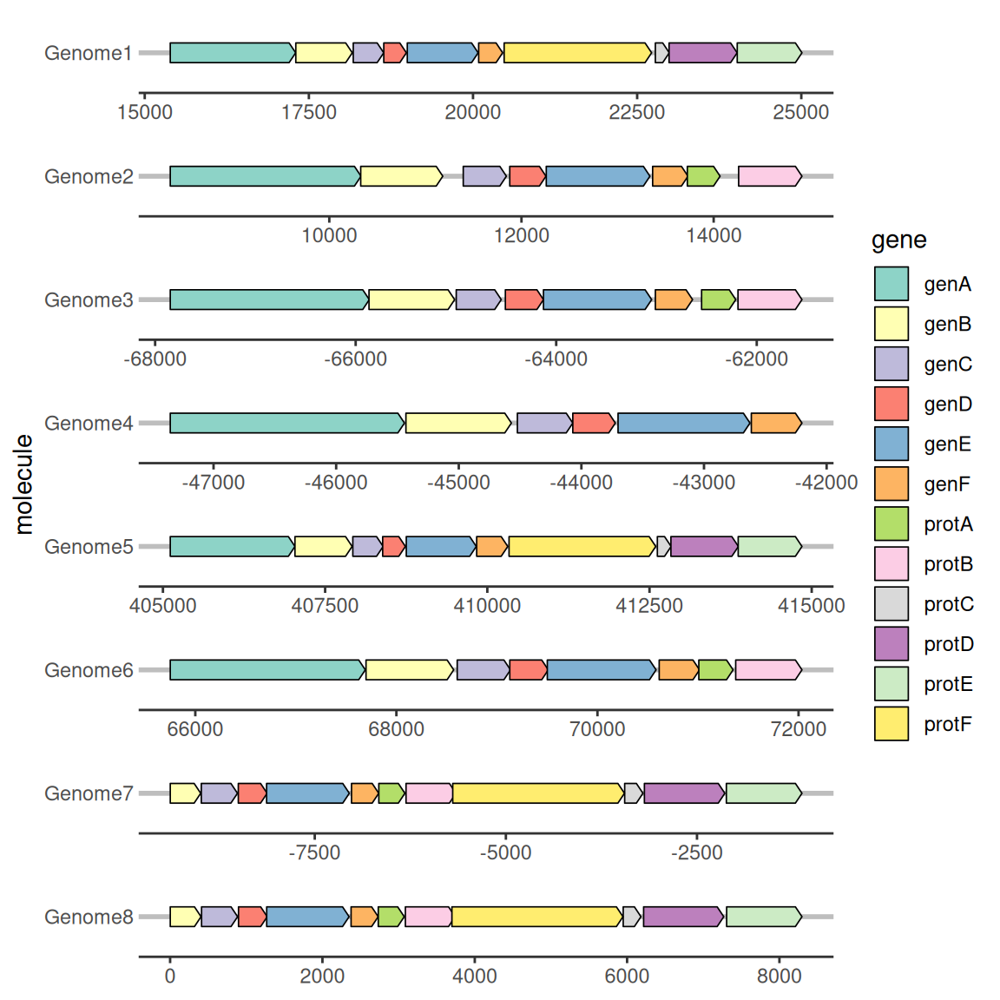
2.5 Modify the direction of genes
To modify the gene direction, you generally need to set the forward mapping. The content of the mapping column must be a value that can be converted into a Boolean value, such as: 0/1, T/F, TRUE/FALSE, “True”/“False”, etc. You can use the as.logical function to judge for yourself. If there is no setting, the gene arrow points to the direction of xmax by default. When the forward mapping is set, the gene with a Boolean value of TRUE points to the direction of xmax, and the gene with a Boolean value of FALSE points to the direction of xmin. Therefore, if xmin and xmax in your data are directional, you can also not perform forward mapping.
# Modify the direction of genes
ggplot(example_genes, aes(xmin = start, xmax = end, y = molecule, fill = gene, forward = orientation)) +
geom_gene_arrow() +
facet_wrap(~ molecule, scales = "free", ncol = 1) +
scale_fill_brewer(palette = "Set3") +
theme_genes()
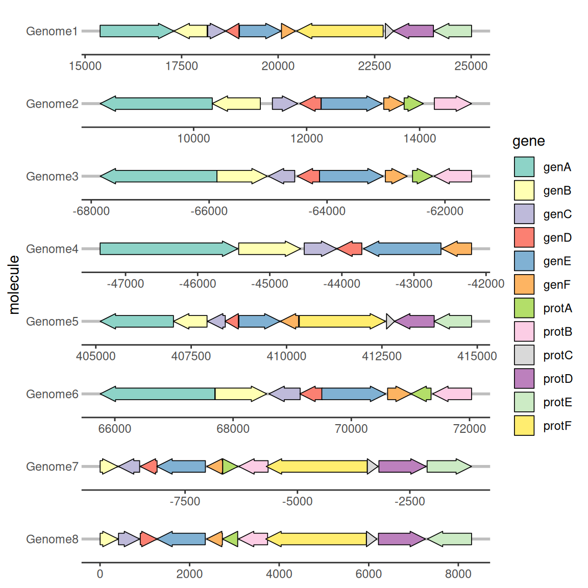
Application
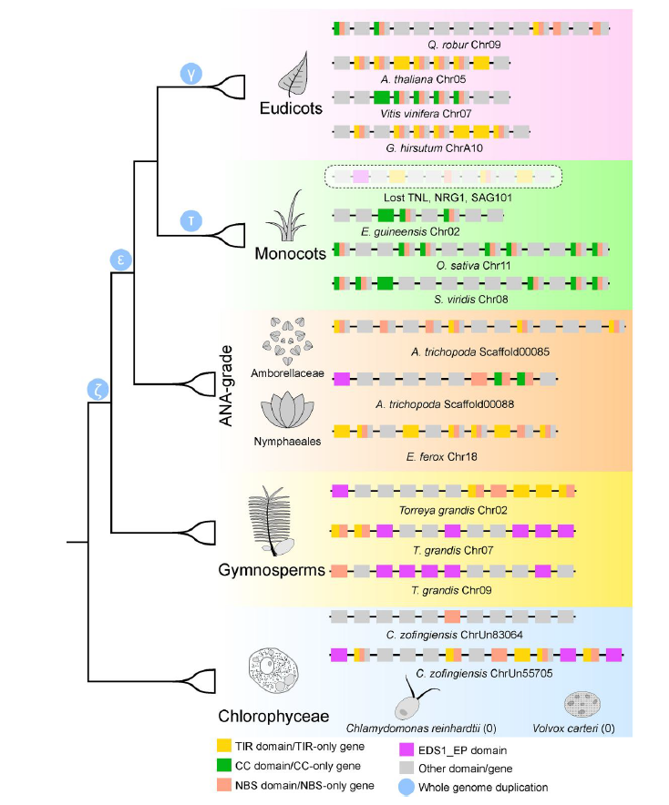
The figure shows the loss and differentiation model of NLR genes in plants during evolution. [1]„ÄÇ
Reference
[1] Guo BC, Zhang YR, Liu ZG, Li XC, Yu Z, Ping BY, Sun YQ, van den Burg H, Ma FW, Zhao T. Deciphering Plant NLR Genomic Evolution: Synteny-Informed Classification Unveils Insights into TNL Gene Loss. Mol Biol Evol. 2025 Feb 3;42(2):msaf015. doi: 10.1093/molbev/msaf015. PMID: 39835721; PMCID: PMC11789945.